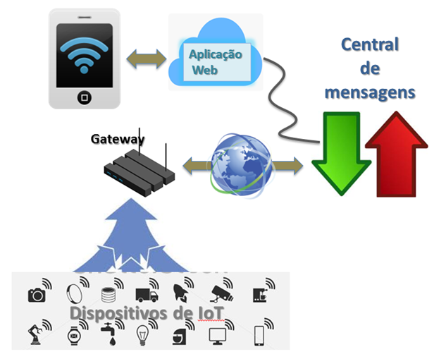

Cp5
CP5 - Projeto de Internet das Coisas¶
- O objetivo do checkpoint é avaliar sua compreensão acerca do conteúdo ministrado pela disciplina.
Ideia geral¶
Construção de uma solução de IoT que abrange todas as pontas da comunicação entre usuário e dispositivos

A desafio consiste no desenvolvimento de uma solução simples mas completa que ilustra as partes mais importantes de uma arquitetura de IoT: os dispositivos e os usuários. A solução também não contempla as ferramentas de segurança que seriam necessárias ao implantar um sistema real.
Entrega e Apresentação do projeto:¶
- Individual ou em Grupo (até 5 alunos)
- Entrega da documentação via github, apresentar o repositório ORGANIZADO do projeto com toda a doumento e instruções de como replicar o projeto. (em breve o formulario para preenchechimento)
- A apresentação será presencial, e ocupará as aulas do dia 01/11/2023(2TDSA) 27/10/2023(2TDSG)
Haverá tempo durante as aulas para tirar dúvidas quanto ao desenvolvimento do trabalho.
Requisitos mínimos:¶
O sistema é composto por pelo menos 1 coisa inteligente, que posssui:
-
Pelo menos 3 sensores, sendo eles:
- pelo menos 1 sensor deve ser digital;
- pelo menos 1 sensor deve ser analógico.
-
Pelo menos 3 atuadores, sendo eles:
- pelo menos 1 atuador deve ser digital;
- pelo menos 1 atuador deve ser por PWM (analogWrite())
Tip
Pense em dispositivos ou soluções que são ou podem ser utilizados em seu dia-a-dia, utilize como referência os sensores/atuadores disponíveis no kit IoT.
Rubrica¶
(R0 - NOTA até 1 ponto) Ideação:
-
Explique de forma clara qual o objetivo do seu projeto, o que ele faz e como funciona.
-
Faça um esboço da arquitetura do seu projeto.
(R1 - NOTA até 1 ponto1) Programa em linguagem do Arduino que realize pelo menos:
-
A leitura de
pelo menos três sensoresa cada200ms, disponibilizando as leituras na porta serial, no formato JSON{"<SENS1>":<VALOR1>,..., "<SENSn>":<VALORn>}, onde<SENS1>e<SENSn>são os nomes dos sensores, e<VALOR1>e<VALORn>são os valores lidos, respectivamente. Deve ser utilizado sensores analógicos e digitais. -
a execução de comandos em
pelo menos três atuadores, lendo esses comandos pela porta serial. Os comandos devem ser na forma{“<CMD>”:<VALOR>}, onde CMD é o nome do comando e VALOR é o parâmetro enviado. Por exemplo, se<CMD>for led, então<VALOR>pode ser “On/Off” (liga/desliga) ou “0~255” (dimmer), por exemplo. Deve possuir atuadores digitais e analógicos (PWM). -
para mais sensores e atuadores siga as instruções acima.
(R2 - NOTA até 2 pontos) Comunicação com o broker MQTT de sua escolha: deve ser desenvolvido um programa Node-RED e Arduino que conecte o dispositivo de IoT à central de mensagens (MQTT Broker) através dos seguintes tópicos:
- Realiza
PUBsempre que for realizada a leitura dos sensores, convertendo e enviando a informação de cada sensor no formato JSON{"value": <VALOR>}ao tópico:
fiap/iot/turma/<TT>/grupo/<NNN>/devtype/<TYPE>/devid/<ID>/sensor/<SENS>
onde:
* <TT> corresponde à turma (2TDSA, 2TDSG)
* <NNN> corresponde ao nome do grupo
* <TYPE> corresponde ao tipo de dispositivo (arduino ou esp8266)
* <ID> corresponde à identificação do dispositivo (pode ser o MAC Address do ESP8266, ou o número de série do Arduino, ou qualquer identificação que quiser)
* <SENS> corresponde ao nome do sensor
- Para cada sensor, faça a subscrição
SUBao seguinte tópico, que irá receber um JSON da forma{"value": <VALOR>}:
fiap/iot/turma/<TT>/grupo/<NNN>/devtype/<TYPE>/devid/<ID>/cmd/<CMD>
onde <CMD> corresponde ao nome do comando a ser executado. Ao receber o comando, ele deve ser convertido e enviado à placa IoT para ser executado.
Este item pode ser realizado de duas formas:
- No caso da placa de IoT ser um Arduino, o item 2 deve ser executado na forma de um Gateway programado em Node-RED, que se conecta ao Arduino através da porta serial.
- No caso da placa de IoT ser um ESP32, ESP8266 Node-MCU, este item deve constar na programação da placa (em linguagem Arduino), e não é necessário um gateway adicional.
(R3 - NOTA até 2 pontos) Aplicação Web desenvolvida em Node-RED ou Flask que se conecte ao Broker MQTT e contenha uma API ReSTful com os seguintes endpoints
-
Recupera uma lista de IDs de dispositivos do tipo especificado, no formato JSON
[GET]http://<HOST>:<PORTA>/<PROJNAME>/fiap/iot/turma/<TT>/grupo/<NNN>/devtype/<TYPE>/devid/all -
Recupera a lista dos sensores disponíveis para o dispositivo, no formato JSON
[GET]http://<HOST>:<PORTA>/<PROJNAME>/fiap/iot/turma/<TT>/grupo/<NNN>/devtype/<TYPE>/devid/<ID>/sensor/all -
Recupera o último valor lido no sensor, no formato JSON {"value":
} [GET]http://<HOST>:<PORTA>/<PROJNAME>/fiap/iot/turma/<TT>/grupo/<NNN>/devtype/<TYPE>/devid/<ID>/sensor/<SENS> -
Recupera a lista dos comandos disponíveis para o dispositivo, no formato JSON
[GET]http://<HOST>:<PORTA>/<PROJNAME>/fiap/iot/turma/<TT>/grupo/<NNN>/devtype/<TYPE>/devid/<ID>/cmd/all -
Executa um comando, passando um argumento da forma {"value":
} [POST]http://<HOST>:<PORTA>/<PROJNAME>/fiap/iot/turma/<TT>/grupo/<NNN>/devtype/<TYPE>/devid/<ID>/cmd/<CMD>
(R4 - NOTA até 2 pontos) Dashboard no Node-RED cuja interface gráfica demonstre o funcionamento de todas os endpoints do exercício anterior, ou seja:
- Apresente controles que permitam enviar comandos para o Arduino, ESP32 ou ESP8266 Node-MCU
- Apresente indicadores que permitam saber o valor dos sensores do Arduino, ESP32 ou ESP8266 Node-MCU
- (até 1 ponto) Capricho na usabilidade da interface.
(R5 - NOTA até 2 pontos) Desenvolvimento de alguma feature especial de pesquisa extra para o projeto, podendo ser:
- Uso de comunicação Bluetooth entre o Arduino e o Gateway Node-RED
- Uso de mais de um dispositivo como ESP32, ESP8266 ou Node-MCU
- Uso da Raspberry como Gateway Node-RED
- Uso de um dos sensores especiais: validar com o professor.
- Protótipo funcional com parte mecânica usando a infraestrutra do laboratório MakerLab (corte a laser, impressora 3D entre outros...)